Lab 5: Linear PID Control
Objective
The purpose of this lab is to implement PID position control on the robot. The robot must drive as fast as possible toward a wall and stop exactly 1 foot (304mm) away using feedback from the ToF sensor. The solution must be robust to varying starting distances (2–4m).
Prelab: Bluetooth Communication
The BLE communication pipeline carries over from Labs 1–4. The Artemis
collects timestamped distance, error, and control speed into arrays during
the PID run, then sends all data over BLE after the run completes — avoiding
any BLE overhead during the tight control loop.
Four commands were added for Lab 5: START_LINEAR_PID,
STOP_LINEAR_PID, SEND_LINEAR_PID_DATA, and
SET_LINEAR_PID_GAIN.
The SET_LINEAR_PID_GAIN command lets me update Kp, Ki, and Kd
from Jupyter without reflashing, which was essential for rapid gain tuning:
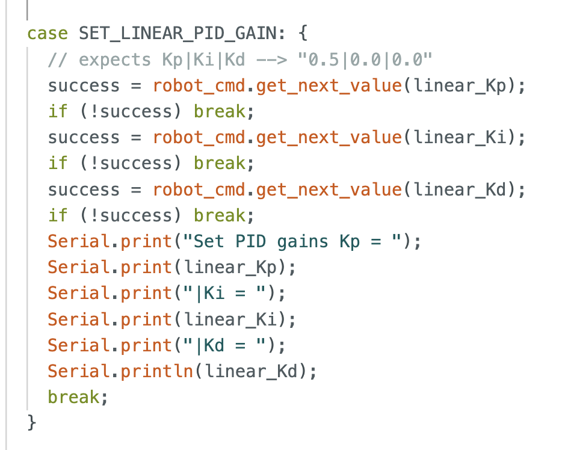
SET_LINEAR_PID_GAIN command handler.
The Artemis parses the pipe-delimited string "Kp|Ki|Kd" and
updates the global gain variables at runtime.
On the Python side, gains are set immediately before starting the controller:
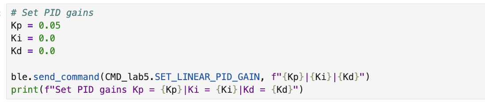
A hard stop is implemented directly on the Artemis: when BLE disconnects,
the while(central.connected()) loop exits and stop()
is called immediately, ensuring motors never run uncontrolled.
Debugging: Wrong ToF Sensor
Initially the PID didn't work at all, the distance readings were weird and the car didn't respond correctly. After some investigation, I discovered the root cause: I was using sensor 1 (the side-facing sensor) instead of sensor 2 (the front-facing sensor). I verified this by placing my hand in front of and beside each motor while watching the sensor readings.
Testing which sensor is sensor 1 (front) vs sensor 2 (side) by blocking each with my hand.
Once I identified the issue, I switched the controller from sensor1
to sensor2:
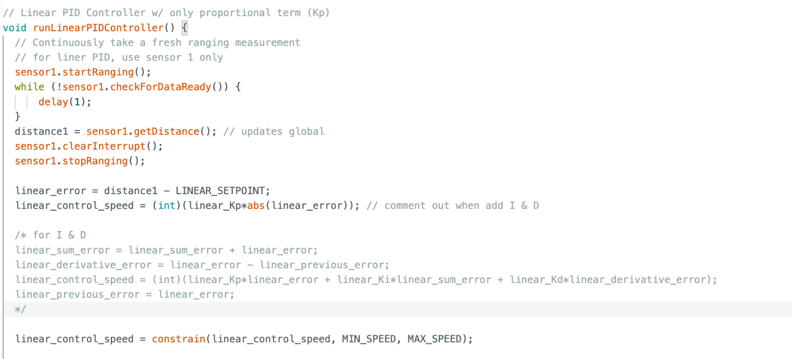
runLinearPIDController()
incorrectly reading from sensor1 (the side sensor).
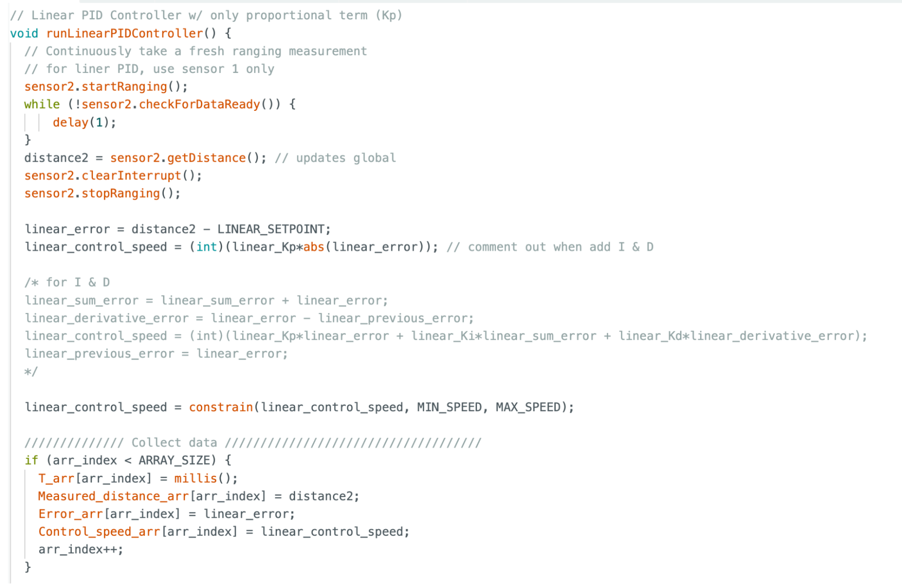
sensor2
(the front-facing sensor). The I and D terms are commented out for initial
P-only testing.
The Serial Monitor confirmed successful sensor initialization after unplugging and replugging the Qwiic cables (a recurring issue with my bent MultiPort connector):
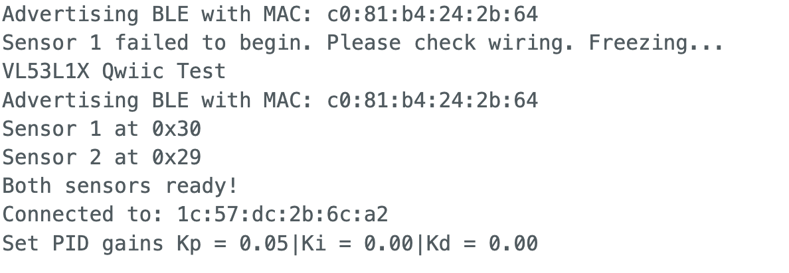
PID Controller Implementation
P-Only Controller
I started with a P-only controller. The control law is:
u = Kp × (distance - 304).
The output is clamped to [0, 255] and passed through the deadband mapping
function from Lab 4 before being sent to the motors. A ±20mm deadzone stops
the motors to prevent oscillation near the setpoint.
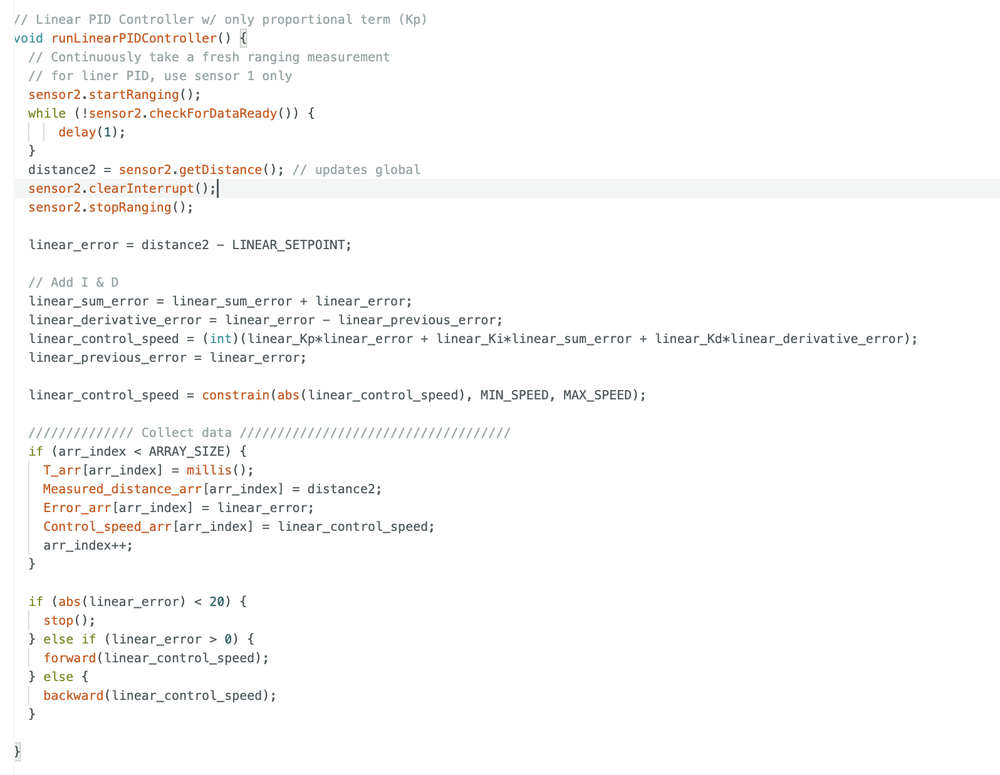
runLinearPIDController()
with the full PID implementation. The I and D terms are enabled;
constrain(abs(control_speed), MIN, MAX) handles the output clamping,
and the sign of the error determines forward vs. backward direction.
P Gain Tuning
With Kp = 0.5 the car drove straight into the wall repeatedly, then bounced around the room before I stopped it from Python. Kp = 0.05 and Kp = 0.02 still caused wall collisions — no matter how low Kp was, the car built up enough momentum from 2m away to overshoot. This was a momentum problem, not a Kp tuning problem.
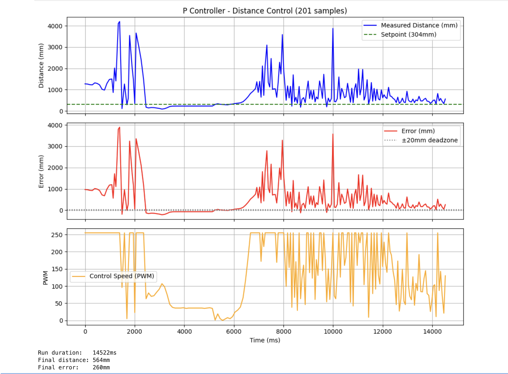
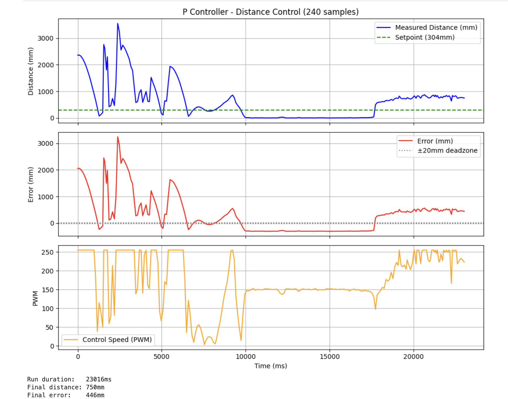
Failed P only attempt. Car drives into wall despite multiple Kp adjustments.
Adding the D Term
The bump into the wall is a momentum/overshoot problem. The D term sees the
rate of approach (error changing fast → apply braking force) and reduces speed
before the car reaches the setpoint. I uncommented the I & D block in
the Arduino code and set Kd = 0.5 via the SET_LINEAR_PID_GAIN
command:
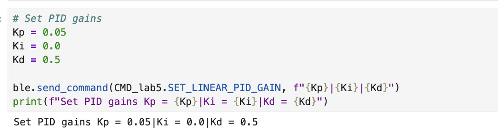
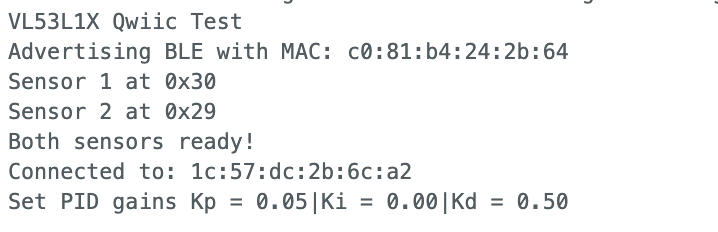
At Kd = 5 the robot rampaged across the room — this was caused by
derivative kick on startup. When the PID starts from 2m away,
linear_previous_error = 0, so on the very first iteration
derivative_error = 1700 - 0 = 1700, giving
Kd × 1700 = 8500, clamped to 255 immediately regardless of gain.
Kd = 0.5 avoided this since the D contribution was small, and Kd = 1 produced
some oscillation. The final working configuration is Kp = 0.05, Kd = 0.7.
Range and Sampling Rate Discussion
The ToF sensor is configured in long-distance mode (~10 Hz update rate) with
a blocking read in the control loop. This means the control loop is bottlenecked
at the sensor rate, approximately one iteration per 100ms. At 2m away and
Kp = 0.05, the initial control output is 0.05 × 1700 = 85 PWM,
well above the deadband, so the car moves immediately. At low Kp values like
0.02 the initial PWM can fall near or below the deadband threshold, causing
a visible delay before the motors start. For Lab 7, the blocking read was
replaced with a non-blocking approach to decouple the control loop rate from
the sensor rate.
Results
Kp = 0.05, Kd = 0
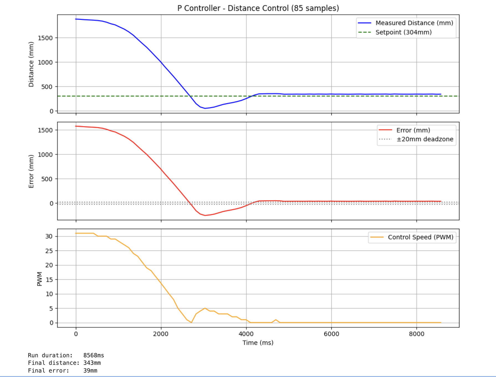
P-only run. Car approaches and stops without crashing, but settles slightly above the 304mm setpoint.
Kp = 0.05, Kd = 0.5 — Working PD Controller
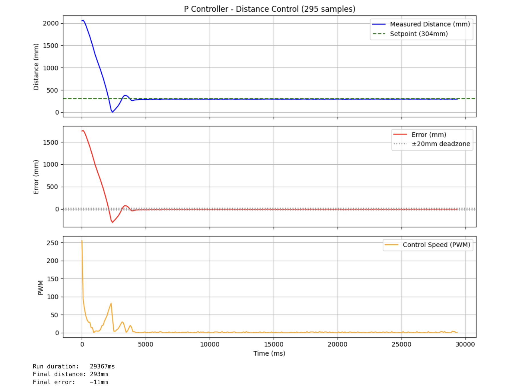
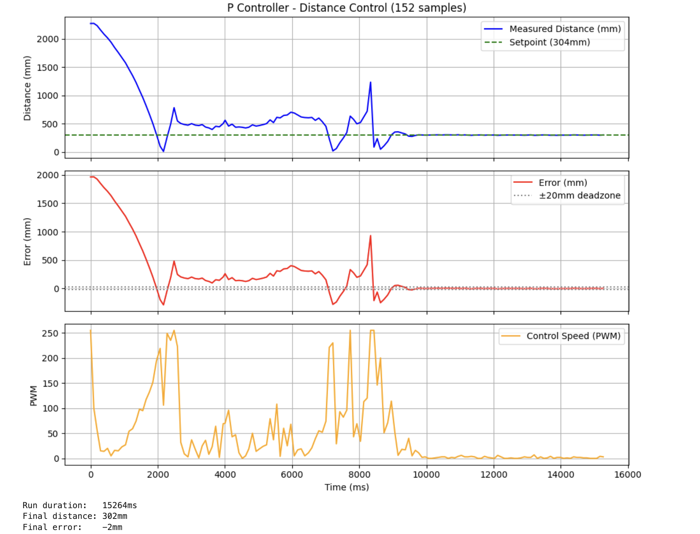
Successful PD run with Kp = 0.05, Kd = 0.7. The car drives to the wall and stops at approximately 1ft away. This is a partial implementation (blocking sensor reads), but demonstrates working position control.
Step Response for Lab 7
As preparation for Lab 7's Kalman Filter, I collected a step response by driving the car at constant 150 PWM toward my backpack (used as a foam buffer) and logging the ToF distance and timestamps:
Step response collection. Constant 150 PWM toward wall, backpack used as cushion.
Known Issues and Future Work
Two issues remain to be addressed in future labs:
Derivative kick on startup: When the PID starts from far away,
linear_previous_error is initialized to 0, so the first derivative
term is enormous (error = ~1700, derivative = 1700 on the first step). This
causes a large initial PWM spike regardless of Kd. The fix is to initialize
linear_previous_error to the first real sensor reading rather
than 0.
Off-axis recovery: After hitting the wall, the car bounces and spins off-axis. The ToF now reads a large distance (different wall or open room) and the controller drives forward at full speed toward the new surface. The fix is a sanity check: if distance jumps from ~300mm to above 2000mm suddenly, the car has spun off-axis and the controller should stop immediately rather than chase a new target.
References
- Lab 5 Instructions — Fast Robots @ Cornell
- Jeffrey Cai's Lab 5 Report (referenced for some code structure and data collection structure)
- Grammarly writing assistance is used to fix my report's grammar and sentence flow.